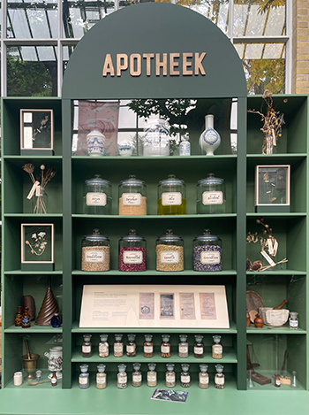
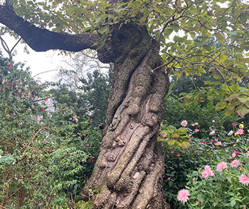

Geneesmiddelen
de Hortus Botanicus. Dit is niet zomaar een tuin, maar een unieke plek waar natuur, wetenschap en geschiedenis samenkomen. De Hortus, opgericht in 1638, werd in eerste instantie aangelegd voor een zeer belangrijk doel: het verzamelen en onderzoeken van planten die gebruikt konden worden voor medicijnen en geneesmiddelen.
Destijds was Amsterdam een van de grootste handelssteden ter wereld, met schepen die zeldzame planten en kruiden meebrachten uit alle hoeken van de wereld. De stad was in de zeventiende eeuw een centrum van handel, maar ook van wetenschap. Met de komst van de Hortus kon de kennis over geneeskrachtige planten worden verzameld en uitgebreid. Zo konden artsen en apothekers nieuwe geneesmiddelen ontwikkelen die ziekten konden bestrijden.
Een bijzondere persoon die in de Hortus werkte en veel heeft bijgedragen aan de plantkundige kennis, is Caspar Commelin. Hij was een belangrijke botanicus en beheerder van de tuin in de late zeventiende eeuw. Commelin legde een gedetailleerde verzameling van planten aan en schreef boeken over de soorten die in de tuin groeiden. Dankzij zijn werk werd de kennis van planten en hun geneeskrachtige eigenschappen in Europa verder verspreid.
In de Hortus kun je vandaag nog steeds veel van deze planten bewonderen. Denk bijvoorbeeld aan de cinchonaboom, waarvan de bast ooit werd gebruikt om kinine te maken, een belangrijke behandeling voor malaria. Of neem de gemberplant, die wereldwijd bekend is vanwege zijn ontstekingsremmende eigenschappen. De Hortus blijft een bron van kennis en inspiratie voor wetenschappers en apothekers die onderzoek doen naar natuurlijke geneesmiddelen.
Als ik rondloop in de Hortus, voel ik me verbonden met die eeuwenoude traditie. Het is bijzonder om te beseffen dat de planten die hier groeien niet alleen mooi zijn, maar ook een belangrijke rol kunnen spelen in de gezondheid van mensen. Vandaag de dag werken onderzoekers wereldwijd samen om planten te bestuderen en nieuwe medicijnen te ontwikkelen. Zo draagt de Hortus niet alleen bij aan ons begrip van de natuur, maar ook aan een betere en gezondere toekomst.